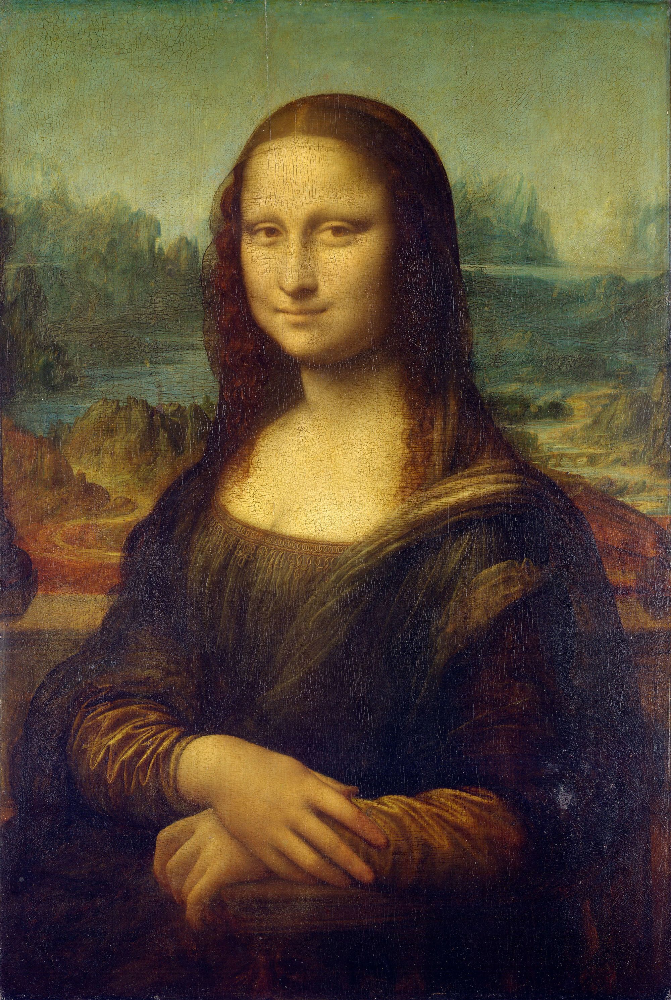
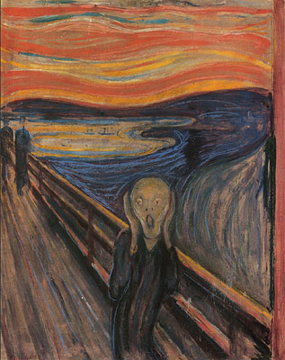
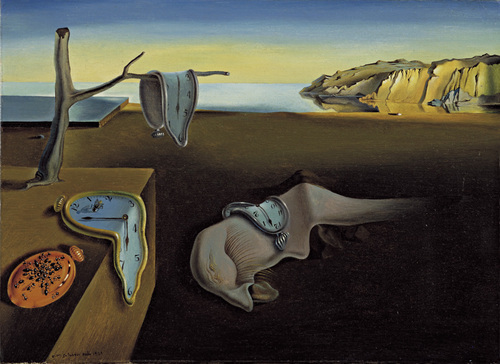
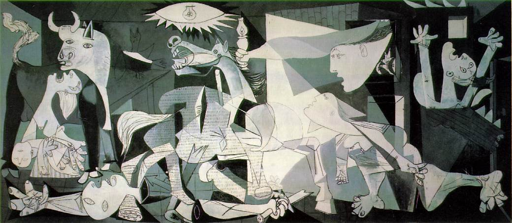

This portrait is arguably the most famous painting in the world, known for its enigmatic expression.This painting artist was Vincent van Gogh.
Mona_LisaVincent van Gogh has painted countless well-known pieces; however, his painting Starry Night is widely considered to be his magnum opus. Painted in 1889, the piece was done from memory and whimsically depicts the view from his room at the sanitarium he resided in at the time.


Using oil and pastel on cardboard, Edvard Munch painted his most famous piece, The Scream, circa 1893. Featuring a ghoulish figure that looks like the host from Tales from the Crypt, the backdrop of this expressionist painting is said to be Oslo, Norway.
The scream
Painted in 1931 by yet another Spanish artist, Salvador Dali's The Persistance of Memory is one of the most recognizable and individual pieces in art history. Depicting a dismal shoreline draped with melting clocks, it is thought that Albert Einstein's Theory of Relativity inspired this bizarre piece.
Presistence of memory
Inspired by the bombing of Guernica, Spain, during the Spanish Civil War, Pablo Picasso completed this most famous piece, Guernica, in 1937. This piece was originally commissioned by the Spanish government and intended to depict the suffering of war and ultimately stand as symbol for peace.
Guernica|
|
|---|